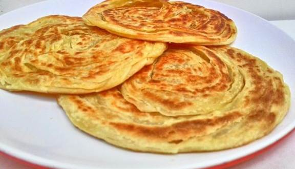
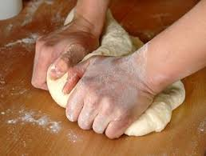
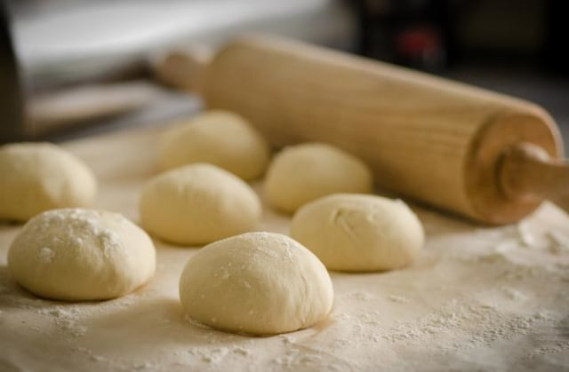

Resep Roti Maryam

Resep
250 Gr tepung terigu
1 Butir Telur
3 sdm Mentega,Lelehkan
100ml Air Hangat
2 sdm Susu Bubuk(Optional)
1/2 sdt Garam
Margarin Leleh Untuk Olesan
Minyak Untuk Merendam
Cara Pembuatan
- Aduk Semua Adonan Roti

- Uleni sampai kalis(pakai tangan)jangan takut,adonan lengket ya lumuri tangan sesekali dengan tepung

- Kalisnya adonan Canai tidak seperti roti ya
